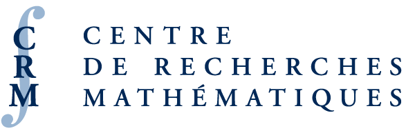
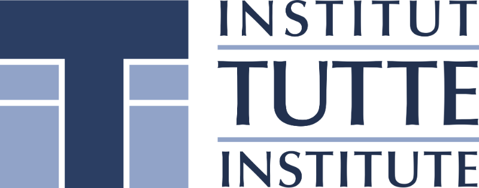

University of Ottawa Colloquium in Mathematics and Statistics
 
Welcome to the University of Ottawa Colloquium in Mathematics and Statistics (UOCMS). This series brings together researchers from diverse institutions to present lectures on current developments in mathematics and statistics.
Fall 2025
Time: Thursdays, 1:00–2:00 pm
Location: University of Ottawa, STEM building, room 664 (unless otherwise specified)
Add to Calendar
Upcoming Lectures
Speaker: Giusy Mazzone, Queen’s University
Date: October 16, 2025
Title: On the Mathematical Analysis of Fluid–Solid Interaction Problems
Abstract: I will present several models describing the interactions between viscous incompressible fluids and solids, which may be either rigid or deformable. The governing equations for these interactions consist of the Navier–Stokes equations coupled with either the Euler equations for rigid body dynamics or the Navier equations of linearized elasticity. A common feature of these problems is that the governing equations have a dissipative—conservative (parabolic—hyperbolic) structure: while the fluid introduces dissipation in the mechanical energy of the coupled system, the solid contributes to the same energy with a conservative (more generally, non-decreasing) component. From a mathematical perspective, this interplay poses significant challenges when establishing the existence and stability of solutions to the governing equations. I will provide an overview of my contributions to the analysis of these problems for various mechanical systems involving fluid–solid interactions.
Speaker: Alejandro Adem, University of British Columbia
Date: October 23, 2025
Title: Topology and Symmetries
Abstract: In this lecture we will discuss how methods from algebraic topology can be applied to shed light on fundamental questions related to finite group actions. We will start with basic invariants such as the Euler characteristic and explore classical applications such as topological space forms as well as more recent work about actions on 4-dimensional manifolds (joint with I. Hambleton). This will be illustrated with a variety of examples, as well as some open problems.
Speaker: Florian Dumpert, Federal Statistical Office of Germany
Date: October 30, 2025
Location: Exceptionally, this colloquium will take place in STEM 464.
Speaker: Jeremy Quastel, University of Toronto
Date: November 6, 2025
Speaker: Bruno Feunou Kamkui, Bank of Canada
Date: November 13, 2025
Speaker: Mark Reesor, Wilfrid Laurier University
Date: November 20, 2025
Speaker: Anush Tserunyan, McGill University
Date: December 4, 2025
Past Lectures
Speaker: Jen Hom, Georgia Institute of Technology
Title: 3-Manifolds, Groups, and Heegaard Floer Homology
Date: October 2, 2025
Location: Exceptionally, this colloquium will take place in STEM 464.
Abstract: We will consider various ways to build 3-manifolds. Under the operation of connected sum, the set of 3-manifolds forms a monoid, and modulo an appropriate equivalence relation, this monoid becomes a group. What is the structure of this group? What families of three-manifolds generate (or don’t generate) this group? We give some answers to these questions using Heegaard Floer homology. This is joint work with (various subsets of) I. Dai, K. Hendricks, M. Stoffregen, L. Truong, and I. Zemke.
Speaker: Sumiya Baasandorj, University of Ottawa
Title: Regularity for a Class of (Non)Variational Problems with (Non)Standard Growth
Date: September 25, 2025
Abstract: Regularity issues in (non)variational problems with (non)standard growth have been a central topic of analysis, witnessing tremendous development over the past century. Regularity techniques ultimately aim to show that suitable weak or distributional solutions are, in fact, classical solutions. In this talk, I will present some recent regularity results for a class of variational functionals with nonstandard growth conditions, namely the so-called Orlicz double phase functional. This will involve revisiting the fundamental contributions of De Giorgi and Nash and connecting them with recent advances in nonuniformly elliptic problems. Furthermore, I will try to give an overview of the regularity theory for nonvariational elliptic problems, such as the Monge–Amp`ere equation, and discuss its connections to optimal transport theory.
Lecture slides
Speaker: Emanuele Naldi, University of Genoa
Title: Inexact Jordan–Kinderlehrer–Otto and Proximal-Gradient Algorithms in the Wasserstein Space: Links and Differences from the Hilbert Case
Date: September 18, 2025
Abstract: In this talk, we explore the asymptotic convergence properties of inexact Jordan–Kinderlehrer–Otto (JKO) scheme and proximal-gradient algorithm in the Wasserstein space. While the classical JKO scheme assumes exact minimization at each step, practical implementations rely on approximate solutions due to computational constraints. We analyze two types of inexactness: errors in Wasserstein distance and errors in functional evaluations. We establish rigorous convergence guarantees under controlled error conditions. Beyond the inexact setting, we also extend the convergence results by considering varying stepsizes. Our analysis expands previous approaches, providing new insights into discrete Wasserstein gradient flows. We finish the talk with a comparison to the Hilbert space setting, where the proximity operator is nonexpansive, a property that plays a central role in many classical convergence results. In the Wasserstein setting, the nonexpansivity of the proximity operator generally fails, even for geodesically convex functionals. We discuss the class of functions for which this property still holds and highlight potential directions for future research.
Lecture slides
Speaker: Susanne Pumplün, University of Nottingham
Title: On Skew Constacyclic Codes and their Surprising Connection to Nonassociative Algebra
Date: September 11, 2025
Abstract: Cyclic, constacyclic and skew constacyclic codes are some of the most important and most investigated classes of linear codes (some are now also being used to build quantum error-correcting codes). Their cyclic structure allows us to characterize them using polynomials or skew polynomials, and to describe them as ideals in an algebra. More precisely, each codeword corresponds to a (skew) polynomial in a suitable chosen ideal of its ambient algebra. This ambient algebra may, however, be not associative. This is not well known, as all approaches so far only worked with associative ambient algebras or divert to ambient submodules. In the first part of the talk we will thus set up a cohesive theory that includes the nonassociative case. In the second part, we will address the problem how to classify skew constacyclic codes using the isomorphisms of their ambient algebras. We propose a new definition of equivalence that will result in tighter code classifications than previously presented ones, and will help to de-duplicate codes with the same performance paramenters. We prove with combinatorial methods that the notions of isometry and equivalence defined by Ou-azzou et al. (2025) coincide when the ambient algebras are not associative.
Lecture slides
Speaker: Francesca Bartolucci, Delft University of Technology
Title: Representation Equivalent Neural Operators: A Framework for Alias-Free Operator Learning
Date: September 4, 2025
Abstract: Recently, operator learning, or learning mappings between infinite-dimensional function spaces, has garnered significant attention, notably in relation to learning partial differential equations from data. Conceptually clear when outlined on paper, neural operators require discretization in the transition to computer implementations. This step can compromise their integrity, often causing them to deviate from the underlying operators. This research offers a fresh take on neural operators with a Representation equivalent Neural Operators (ReNO) framework designed to address these issues. At its core is the concept of operator aliasing, which measures inconsistency between neural operators and their discrete representations. More generally, this framework not only sheds light on existing challenges but, given its constructive and broad nature, also potentially offers tools for developing new neural operators. This is a joint work with Rima Alaifari, Emmanuel de Bézenac, Siddhartha Mishra, Roberto Molinaro and Bogdan Raonić.
Lecture slides